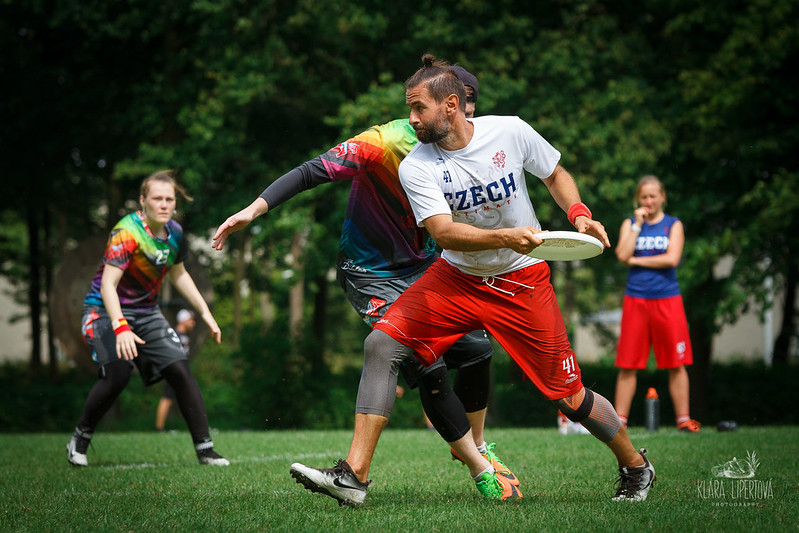

Ke stažení
Co je to ultimate?
Ultimate Frisbee je relativně nový sport, který se hraje od roku 1968, avšak jeho popularita rok od roku stoupá. Výzvy, které tento unikátní sport přináší, jsou přitažlivé pro hráče všech věkových kategorií a atletických úrovní. Jak s ultimate jednou začnete, už vás nepustí. Není s podivem, že ultimate přitahuje každoročně stovky nových hráčů po celém světě. Jedná se o vzrušující a opravdu zábavný sport. Letové vlastnosti disku umožňují hráčům nepřeberné množství hodů. Žádné dva hody nejsou úplně stejné.
Ke hře potřebujete také vytrvalost, abyste vydrželi v neustálém pohybu, a schopnost zvládnout přesné přihrávky vzduchem, podobně jako tomu je v americkém fotbalu. Ultimate se řídí myšlenkou fair play, hráči sami nesou zodpovědnost za průběh hry, místo aby ji nesli rozhodčí, kteří v ultimate nejsou. Cena „Spirit of the Game“ je udělována týmu, který se těchto zásad drží nejvíce. Ultimate frisbee hrají tisíce žen, mužů, dívek a chlapců ve více než 50 zemích světa. Hraje se v kategoriích open (muži), ženy, mix (smíšené týmy mužů a žen), junioři (do 19 let) a masters (nad 33 let).
Ultimate je kolektivní bezkontaktní sport, v němž vítězí tým, který má na konci hrací doby vyšší počet bodů. Hraje se na hřišti o rozměrech cca 100x37 metrů (délka fotbalového hřiště, polovina jeho šířky). Na obou koncích hřiště jsou vyznačeny koncové zóny o hloubce cca 18 metrů.

V ultimate proti sobě hrají dva sedmičlenné týmy. Smyslem hry je pomocí přihrávek dopravit disk do soupeřovy koncové zóny a jeho chycením v zóně získat bod. Po chycení disku se hráč musí zastavit a do 10 vteřin disk přihrát spoluhráči. Povoleným pohybem hráče s diskem je pivotování, tedy otáčení se kolem vlastní osy s jednou nohou pevně na zemi. V ultimate hráči často střídají útok a obranu při ztrátě disku, ke které dochází záhozem disku do autu, na zem, jeho zachycením soupeřem nebo při dlouhém držení disku.
Není povolen fyzický kontakt mezi hráči ani přetahování o disk. Hra je založena na principu řízení hry samotnými hráči – hraje se bez rozhodčích. Všechny přestupky na čarách, při držení disku a fauly jsou hlášeny samotnými hráči přítomnými na hřišti.
Proč hrát ultimate?
Ultimate je velmi atraktivní sport kombinující různé atletické dovednosti. Dobrý hráč musí umět rychle běhat, házet a chytat. Prostor vyniknout i v jiném směru tu pochopitelně je. Ultimate v sobě zahrnuje prvky basketbalu, fotbalu a amerického fotbalu. Proto se v něm našlo už tolik sportovců, původně začínajících s jiným kolektivním sportem. Je jedno, jestli si chodíte zahrát s kamarády do parku nebo tvrdě trénujete třikrát týdně se svým týmem, hra ultimate frisbee vás vždy povzbudí a pobaví.

I když je ultimate frisbee často považováno za zábavu do parku, jedná se o zcela legitimní a náročný sport, který má i své národní a mezinárodní asociace. Jedná se o plnohodnotný sport, který má svá oficiální pravidla a národní či mezinárodní soutěže pro všechny věkové kategorie. Ke hře ultimate je třeba mít výbornou fyzickou kondici, vytrvalost, mrštnost a inteligenci, abyste pochopili, jak se pohybuje disk ve vzduchu a porozuměli týmové taktice v útoku či obraně. Neméně podstatnou součástí této hry je úcta k soupeři a smysl pro fair play. S ultimate se může začít v dětství nebo v dospělosti. Vítán je každý hráč, který v tomto atraktivním sportu najde zalíbení.
Ultimate je vhodným sportem do hodin tělesné výchovy na školách. Je vhodný pro každého, kdo chce zkusit něco nového a výrazně odlišného, aniž by musel vynaložit mnoho peněz. Jde o sport nenáročný, co se týče vybavení a pomůcek. Krom toho při něm děti uplatní dovednosti, které se učí v hodinách tělocviku už na základní škole. Jeho finanční nenáročnost a kompatibilita s jinými sporty činí z ultimate sport perfektní právě pro studenty.
Ultimate přivádí dohromady lidi společných zájmů a povah. Ultimate frisbee je skvělým prostředkem, jak potkat nové zajímavé a zábavné lidi, když se například přistěhujete do nového místa. Ultimate dělá ze spoluhráčů přátele na celý život. Být součástí tohoto jedinečného společenství je pro každého hráče ultimate velká pocta. O to víc, že se jedná o tak málo početnou komunitu ve srovnání s tradičními sporty. Dokonce i mezi soupeřícími týmy panuje jakási přátelská rivalita zpečetěná myšlenkou Spirit of the Game.
Jak házet frisbee?

Technika jednotlivých hodů je založena na koordinaci pohybu paže a prudkého švihu zápěstí. Tento pohyb udává disku rychlost, směr a rotaci kolem vlastní osy, ta je důležitá pro správný a klidný let. Švih zápěstí je konečnou a nejdůležitější fází odhodu. Odhod začínáme krátkým pohybem paže, následuje pohyb předloktí (středem otáčení je loket) až se veškerá kinetická energie nápřahu, švihem zápěstí přenese do pohybu disku. Náklonem disku na jednu nebo druhou stranu docílíme změny dráhy letu disku, disk bude zatáčet tam kam je nakloněn. Obdobně, zdvihneme-li přední hranu disku, poletí vzhůru. Pamatujte, že pro rovný let je nutné vypustit disk z ruky vodorovně. Házející by měl zaujmout před odhodem tzv. „střehový postoj“ – širší stoj rozkročný, nohy v kolenou mírně pokrčeny, disk přidržován oběma rukama volně před tělem. Hráč získá z tohoto postoje stabilitu a nejlepší startovní pozici pro překonání obránce forhendem i bekhendem. Házející se nesmí s diskem pohybovat, smí však pivotovat kolem stojné nohy (praváci levou). Pro odhod forhendu se hráč uvolňuje úkrokem pravou vpravo; pro odhod bekhendu překročením diagonálně vlevo.